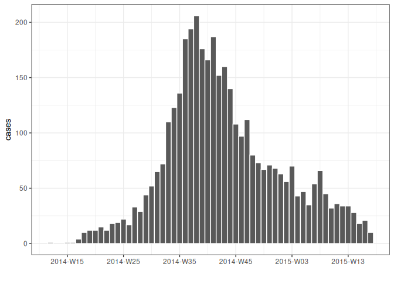

grates provides a simple and coherent implementation of grouped date classes:
-
grates_yearweek with arbitrary first day of the week (see
as_yearweek()); -
grates_month (see
as_month()); -
grates_quarter (see
as_quarter()); -
grates_year (see
as_year()); -
grates_period and grates_int_period for periods of constant length (see
as_period()andas_int_period()).
These classes aim to be formalise the idea of a grouped date whilst also being intuitive in their use. They build upon ideas of Davis Vaughan and the datea package.
For each of the grouped date classes, grates also provides scales to use with ggplot2.
Installation
You can install the released version of grates from CRAN with:
install.packages("grates")The development version of grates can be installed from GitHub with:
remotes::install_github("reconverse/grates")Vignette
A short illustration to grates functionality is provided in the worked example below but a more detailed introduction can be found in the included vignette
`vignette("introduction", package = "grates")`Example
library(grates)
library(outbreaks) # for data
library(dplyr) # for data manipulation
library(ggplot2) # for plotting
# load some simulated linelist data
dat <- ebola_sim_clean$linelist
# group by week
weekly_dat <-
dat %>%
mutate(date = as_yearweek(date_of_infection, firstday = 2)) %>%
count(date, name = "cases") %>%
na.omit()
head(weekly_dat, 8)
#> date cases
#> 1 2014-W12 1
#> 2 2014-W15 1
#> 3 2014-W16 1
#> 4 2014-W17 4
#> 5 2014-W18 10
#> 6 2014-W19 12
#> 7 2014-W20 12
#> 8 2014-W21 15
# plot
ggplot(weekly_dat, aes(date, cases)) + geom_col(width = 1, colour = "white") + theme_bw() + xlab("")
We make working with <grates_yearweek> and other grouped date objects easier by adopting logical conventions:
dates <- as.Date("2021-01-01") + 0:30
weeks <- as_yearweek(dates, firstday = 5) # firstday = 5 to match first day of year
head(weeks, 8)
#> <grates_yearweek[8]>
#> [1] 2021-W01 2021-W01 2021-W01 2021-W01 2021-W01 2021-W01 2021-W01 2021-W02
str(weeks)
#> yrwk [1:31] 2021-W01, 2021-W01, 2021-W01, 2021-W01, 2021-W01, 2021-W01, 20...
#> @ firstday: int 5
dat <- tibble(dates, weeks)
# addition of wholenumbers will add the corresponding number of weeks to the object
mutate(dat, plus4 = weeks + 4)
#> # A tibble: 31 × 3
#> dates weeks plus4
#> <date> <yrwk> <yrwk>
#> 1 2021-01-01 2021-W01 2021-W05
#> 2 2021-01-02 2021-W01 2021-W05
#> 3 2021-01-03 2021-W01 2021-W05
#> 4 2021-01-04 2021-W01 2021-W05
#> 5 2021-01-05 2021-W01 2021-W05
#> 6 2021-01-06 2021-W01 2021-W05
#> 7 2021-01-07 2021-W01 2021-W05
#> 8 2021-01-08 2021-W02 2021-W06
#> 9 2021-01-09 2021-W02 2021-W06
#> 10 2021-01-10 2021-W02 2021-W06
#> # … with 21 more rows
# addition of two yearweek objects will error as it is unclear what the intention is
mutate(dat, addweeks = weeks + weeks)
#> Error in `mutate()`:
#> ! Problem while computing `addweeks = weeks + weeks`.
#> Caused by error in `vec_arith()`:
#> ! <grates_yearweek> + <grates_yearweek> is not permitted
# Subtraction of wholenumbers works similarly to addition
mutate(dat, minus4 = weeks - 4)
#> # A tibble: 31 × 3
#> dates weeks minus4
#> <date> <yrwk> <yrwk>
#> 1 2021-01-01 2021-W01 2020-W49
#> 2 2021-01-02 2021-W01 2020-W49
#> 3 2021-01-03 2021-W01 2020-W49
#> 4 2021-01-04 2021-W01 2020-W49
#> 5 2021-01-05 2021-W01 2020-W49
#> 6 2021-01-06 2021-W01 2020-W49
#> 7 2021-01-07 2021-W01 2020-W49
#> 8 2021-01-08 2021-W02 2020-W50
#> 9 2021-01-09 2021-W02 2020-W50
#> 10 2021-01-10 2021-W02 2020-W50
#> # … with 21 more rows
# Subtraction of two yearweek objects gives the difference in weeks between them
mutate(dat, plus4 = weeks + 4, difference = plus4 - weeks)
#> # A tibble: 31 × 4
#> dates weeks plus4 difference
#> <date> <yrwk> <yrwk> <int>
#> 1 2021-01-01 2021-W01 2021-W05 4
#> 2 2021-01-02 2021-W01 2021-W05 4
#> 3 2021-01-03 2021-W01 2021-W05 4
#> 4 2021-01-04 2021-W01 2021-W05 4
#> 5 2021-01-05 2021-W01 2021-W05 4
#> 6 2021-01-06 2021-W01 2021-W05 4
#> 7 2021-01-07 2021-W01 2021-W05 4
#> 8 2021-01-08 2021-W02 2021-W06 4
#> 9 2021-01-09 2021-W02 2021-W06 4
#> 10 2021-01-10 2021-W02 2021-W06 4
#> # … with 21 more rows
# weeks can be combined if they have the same firstday but not otherwise
wk1 <- as_yearweek("2020-01-01")
wk2 <- as_yearweek("2021-01-01")
c(wk1, wk2)
#> <grates_yearweek[2]>
#> [1] 2020-W01 2020-W53
wk3 <- as_yearweek("2020-01-01", firstday = 2)
c(wk1, wk3)
#> Error in `vec_ptype2.grates_yearweek.grates_yearweek()`:
#> ! Can't combine <grates_yearweek>'s with different `firstday`